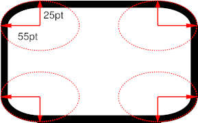

This module contains the features of CSS relating to DESCRIBE HERE. CSS is a language for describing the rendering of structured documents (such as HTML and XML) on screen, on paper, in speech, etc.
The following features are at risk: …
This section is not normative.
Provide background, motivation, etc.
Explain, normatively, how this module affects the definition of CSS.
This module replaces and extends the SUMMARIZE HERE features defined in [[!CSS21]] sections W.X and Y.Z.
All properties in this module apply to the ::first-line and
::first-letter pseudo-elements.
This specification follows the CSS property definition conventions from [[!CSS21]]. Value types not defined in this specification are defined in CSS Level 2 Revision 1 [[!CSS21]]. Other CSS modules may expand the definitions of these value types: for example [[CSS3VAL]], when combined with this module, expands the definition of the <length> value type as used in this specification.
In addition to the property-specific values listed in their definitions, all properties defined in this specification also accept the inherit keyword as their property value. For readability it has not been repeated explicitly.
Look at the mark-up in this section for examples. See the documentation for more precise instructions. The companion of this template shows the processed result.
To refer to HTML, use [[HTML40]] (note the double square brackets). To make a normative reference, insert a “!”, like this: [[!CSS3SYN]] The currently available list of bibliographic data can of course be extended.
We write about a property such as 'display-model' like this and
about a piece of CSS code like this: ''foo: bar''. Inline HTML and XML
are similar, but use the CODE element: <blockquote>...</blockquote> and <r:xyz>...</r:xyz>.
Note that the property will automatically be linked to its definition.
To put terms into the index, there are many variants, but hopefully the simplest will be the most common. But a little more work now will help many people for a long time.
Note that you can add non-normative notes like this.
Of course, multi-paragraph notes are also possible: just enclose them in a DIV:
Note that this note is a multi-paragraph note.
It doesn't need to have two paragraphs, but it could.
Displayed examples come in eight different types: CSS examples that need no separate paragraph of explanation are put in a simple PRE:
EM { font-style: italic }
CSS examples that need extra text need a DIV.
The following example is the same as the previous one, but now it is explained:
EM { font-style: italic }
Illegal CSS examples (examples of errors) are the same, but with class "illegal example". Examples of HTML and XML code have class "html" and "xml" respectively, but are otherwise ditto.
A formal definition of a property looks like this:
| Name: | display-inside |
|---|---|
| Value: | inline-inside | block-inside | table | ruby | icon |
| Initial: | text |
| Applies to: | all elements |
| Inherited: | no |
| Percentages: | N/A |
| Computed value: | specified value |
| Animatable: | no |
| Canonical order: | per grammar |
Cross-references are created by enclosing a term or phrase in <dfn> (like the word cross-references earlier in this sentence). Then any element with the same content will automatically be linked. For example: cross-references.
And a figure with a caption is done like this:

Just a random image. SVG would be nice, but maybe SVG isn't sufficiently easy to use yet. W3C prefers PNG over GIF (obviously, since PNG is a W3C Rec).
Don't forget to write the longdesc.
An open issue or editorial remark is OK in a WD, but they should be resolved/removed before the document goes to “CR” (Candidate Recommendation). Use class=“issue”.
Conformance requirements are expressed with a combination of descriptive assertions and RFC 2119 terminology. The key words “MUST”, “MUST NOT”, “REQUIRED”, “SHALL”, “SHALL NOT”, “SHOULD”, “SHOULD NOT”, “RECOMMENDED”, “MAY”, and “OPTIONAL” in the normative parts of this document are to be interpreted as described in RFC 2119. However, for readability, these words do not appear in all uppercase letters in this specification.
All of the text of this specification is normative except sections explicitly marked as non-normative, examples, and notes. [[!RFC2119]]
Examples in this specification are introduced with the words “for example”
or are set apart from the normative text with class="example",
like this:
This is an example of an informative example.
Informative notes begin with the word “Note” and are set apart from the
normative text with class="note", like this:
Note, this is an informative note.
Conformance to [TITLE] is defined for three conformance classes:
A style sheet is conformant to [TITLE] if all of its statements that use syntax defined in this module are valid according to the generic CSS grammar and the individual grammars of each feature defined in this module.
A renderer is conformant to [TITLE] if, in addition to interpreting the style sheet as defined by the appropriate specifications, it supports all the features defined by [TITLE] by parsing them correctly and rendering the document accordingly. However, the inability of a UA to correctly render a document due to limitations of the device does not make the UA non-conformant. (For example, a UA is not required to render color on a monochrome monitor.)
An authoring tool is conformant to [TITLE] if it writes style sheets that are syntactically correct according to the generic CSS grammar and the individual grammars of each feature in this module, and meet all other conformance requirements of style sheets as described in this module.
So that authors can exploit the forward-compatible parsing rules to assign fallback values, CSS renderers must treat as invalid (and ignore as appropriate) any at-rules, properties, property values, keywords, and other syntactic constructs for which they have no usable level of support. In particular, user agents must not selectively ignore unsupported component values and honor supported values in a single multi-value property declaration: if any value is considered invalid (as unsupported values must be), CSS requires that the entire declaration be ignored.
To avoid clashes with future CSS features, the CSS2.1 specification reserves a prefixed syntax for proprietary and experimental extensions to CSS.
Prior to a specification reaching the Candidate Recommendation stage in the W3C process, all implementations of a CSS feature are considered experimental. The CSS Working Group recommends that implementations use a vendor-prefixed syntax for such features, including those in W3C Working Drafts. This avoids incompatibilities with future changes in the draft.
Once a specification reaches the Candidate Recommendation stage, non-experimental implementations are possible, and implementors should release an unprefixed implementation of any CR-level feature they can demonstrate to be correctly implemented according to spec.
To establish and maintain the interoperability of CSS across implementations, the CSS Working Group requests that non-experimental CSS renderers submit an implementation report (and, if necessary, the testcases used for that implementation report) to the W3C before releasing an unprefixed implementation of any CSS features. Testcases submitted to W3C are subject to review and correction by the CSS Working Group.
Further information on submitting testcases and implementation reports can be found from on the CSS Working Group's website at http://www.w3.org/Style/CSS/Test/. Questions should be directed to the public-css-testsuite@w3.org mailing list.
Remove this section unless/until the module is in CR.
For this specification to be advanced to Proposed Recommendation, there must be at least two independent, interoperable implementations of each feature. Each feature may be implemented by a different set of products, there is no requirement that all features be implemented by a single product. For the purposes of this criterion, we define the following terms:
The specification will remain Candidate Recommendation for at least six months.
[acknowledgments]